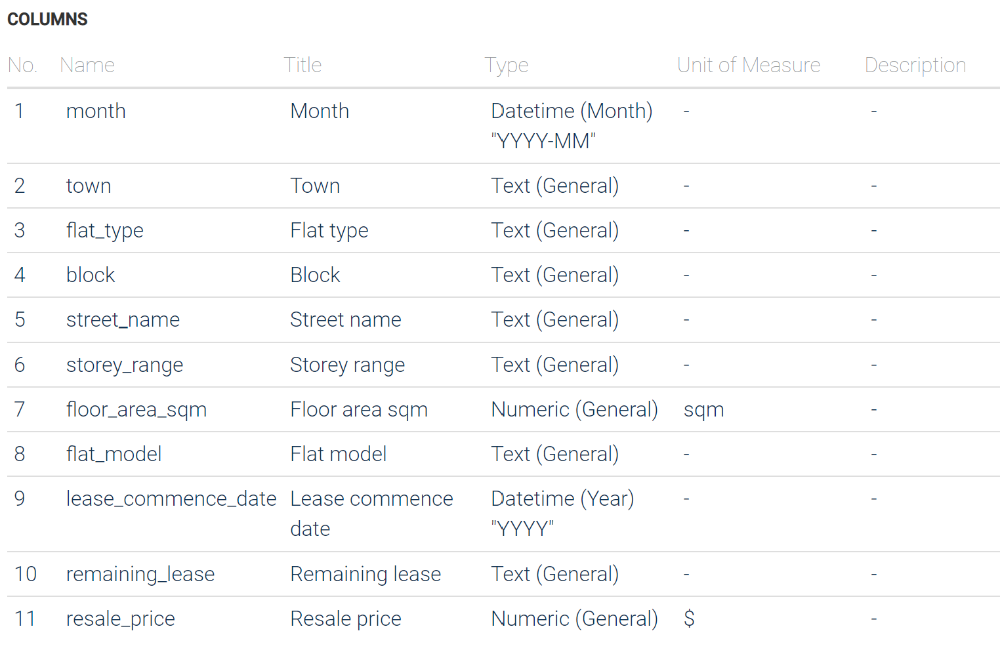

pacman::p_load(DT,plotly,tidyverse,patchwork,ggiraph,ggstatsplot, performance)Take Home Ex 3
Overview
Getting Started
Installing and loading packages
The Dataset
The code chunk below imports the dataset into R by using read_csv() of readr and save it as an tibble data frame called data
data<- read_csv("resale-flat-prices-based-on-registration-date-from-jan-2017-onwards.csv")head(data)# A tibble: 6 × 11
month town flat_…¹ block stree…² store…³ floor…⁴ flat_…⁵ lease…⁶ remai…⁷
<chr> <chr> <chr> <chr> <chr> <chr> <dbl> <chr> <dbl> <chr>
1 2017-01 ANG MO … 2 ROOM 406 ANG MO… 10 TO … 44 Improv… 1979 61 yea…
2 2017-01 ANG MO … 3 ROOM 108 ANG MO… 01 TO … 67 New Ge… 1978 60 yea…
3 2017-01 ANG MO … 3 ROOM 602 ANG MO… 01 TO … 67 New Ge… 1980 62 yea…
4 2017-01 ANG MO … 3 ROOM 465 ANG MO… 04 TO … 68 New Ge… 1980 62 yea…
5 2017-01 ANG MO … 3 ROOM 601 ANG MO… 01 TO … 67 New Ge… 1980 62 yea…
6 2017-01 ANG MO … 3 ROOM 150 ANG MO… 01 TO … 68 New Ge… 1981 63 yea…
# … with 1 more variable: resale_price <dbl>, and abbreviated variable names
# ¹flat_type, ²street_name, ³storey_range, ⁴floor_area_sqm, ⁵flat_model,
# ⁶lease_commence_date, ⁷remaining_leaseBelow is a screenshot of the official website to give a clear view of the column meaning.

Since we only need the data in 2022 and the record of 3/4/5 room units, we need to filter the data.
data <-filter(data,month %in% c("2022-01","2022-02","2022-03","2022-04","2022-05","2022-06","2022-07","2022-08","2022-09","2022-10","2022-11","2022-12"))data <-filter(data,flat_type %in% c("3 ROOM","4 ROOM","5 ROOM"))data1=data %>% group_by(flat_type,month) %>%
summarise(mean_resale_price_per_month = mean(resale_price),
.groups = 'drop')p<- plot_ly(data = data1,
x = ~month,
y = ~mean_resale_price_per_month,
color = ~flat_type ,
colors = "Set1")
add_trace(p, type = "scatter",
mode = "markers+lines")